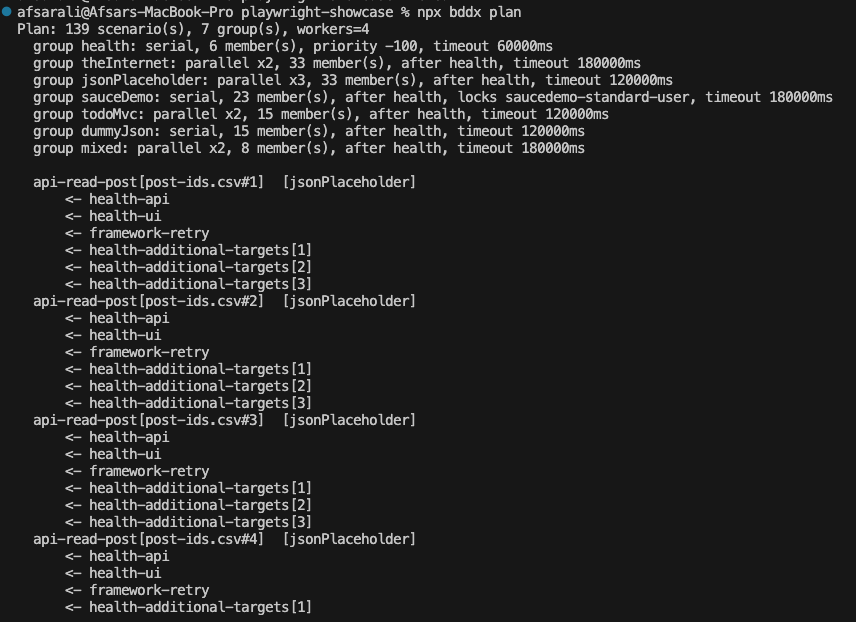

Groups
A group is a named set of scenarios with its own rules. Use groups to say that setup runs first, checkout runs three at a time and payments runs one at a time.
Put scenarios in a group
There are two ways. Use whichever fits, or both.
- Add
@group:nameto a feature, a rule or a scenario. - Give the group a
matchtag expression in the config. Every scenario that matches joins the group.
@group:checkout
Feature: Checkout
Scenario: Buy an apple
Given I am logged in
When I buy "apple"
Then the order is confirmedScenarios in no group run with defaultMode.
Describe the groups in the config
import { defineConfig } from '@bddr/cli';
export default defineConfig({
features: 'features/**/*.feature',
steps: 'steps/**/*.ts',
workers: 4,
groups: {
setup: { mode: 'serial', priority: -10 },
checkout: { mode: 'parallel', workers: 3, dependsOn: ['setup'], match: '@checkout' },
payments: { mode: 'serial', dependsOn: ['setup'], locks: ['payments-db'] },
reports: { dependsOn: ['checkout', 'payments'], onDependencyFailure: 'run' },
},
});This is the config of examples/orchestration. Run npx bddr plan in that folder to see the schedule it produces.
Group options
| Option | What it does |
|---|---|
mode | 'parallel': members run side by side. 'serial': one member at a time. 'exclusive': nothing else runs while a member runs. |
workers | The most members of this group that run at once. The run-wide workers still applies. |
dependsOn | Names of groups that must settle first. See Dependencies. |
onDependencyFailure | 'skip' (default): members are skipped if a dependency group failed. 'run': members run anyway. |
priority | Lower numbers are scheduled earlier. See Locks and priority. |
locks | Lock names held by every member. See Locks and priority. |
match | A tag expression that adds scenarios to the group. |
retry, retryMembers, scenarioRetry | Re-run the whole group. See Retries and flaky tests. |
timeout | Time budget for the group, for example '10m'. |
See the plan before you run
$ npx bddr plan
$ npx bddr plan --plan-format mermaid
$ npx bddr plan --explain features/checkout.feature::buy-an-apple--explain takes a scenario id and says why it runs when it does: which group it is in, what it waits for and which locks it holds.

Change a group from the command line
Any group option can be overridden for one run with --set. See Profiles and --set.
$ npx bddr run --set groups.checkout.mode=serial